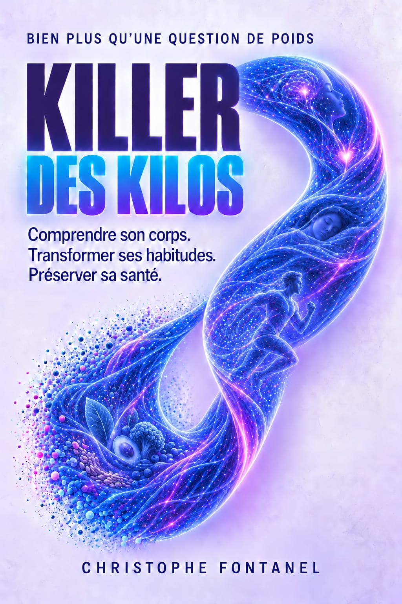
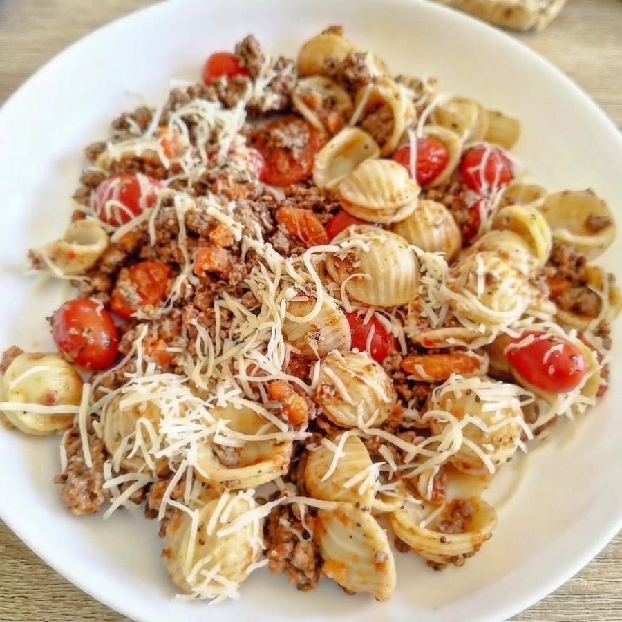
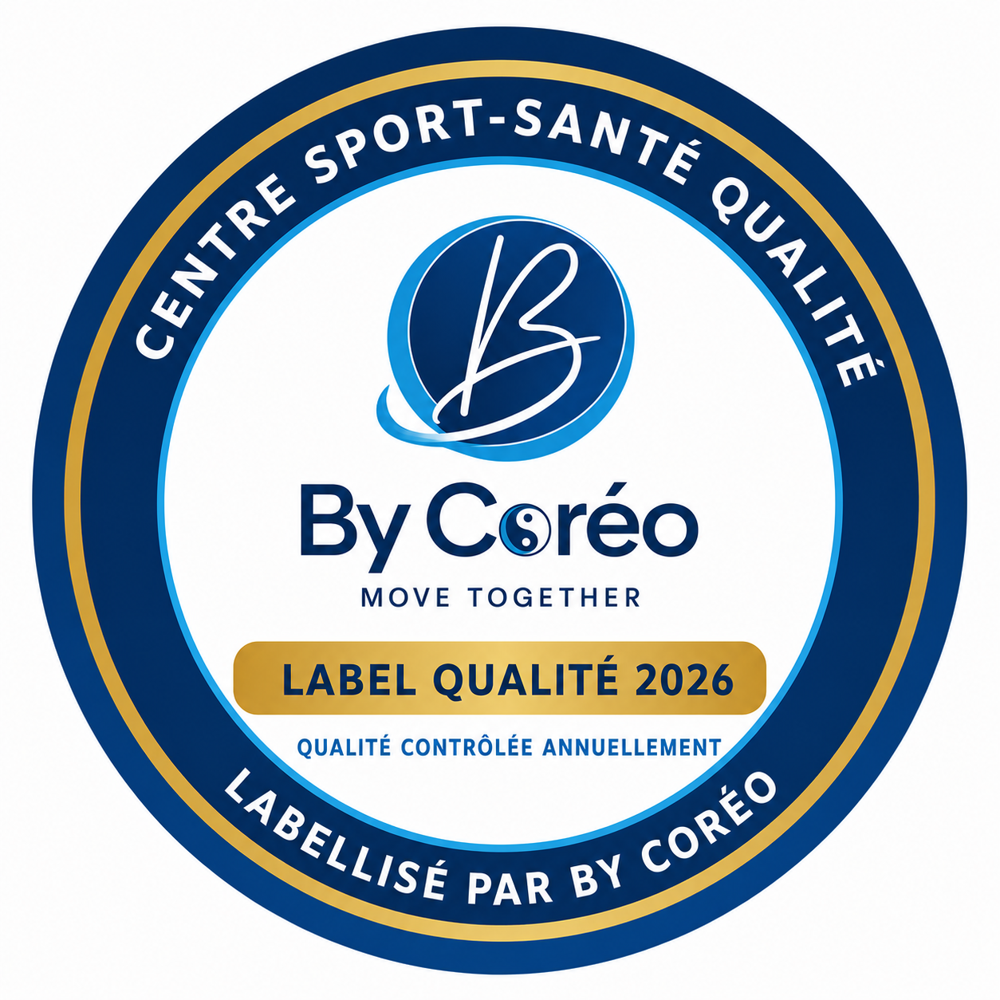
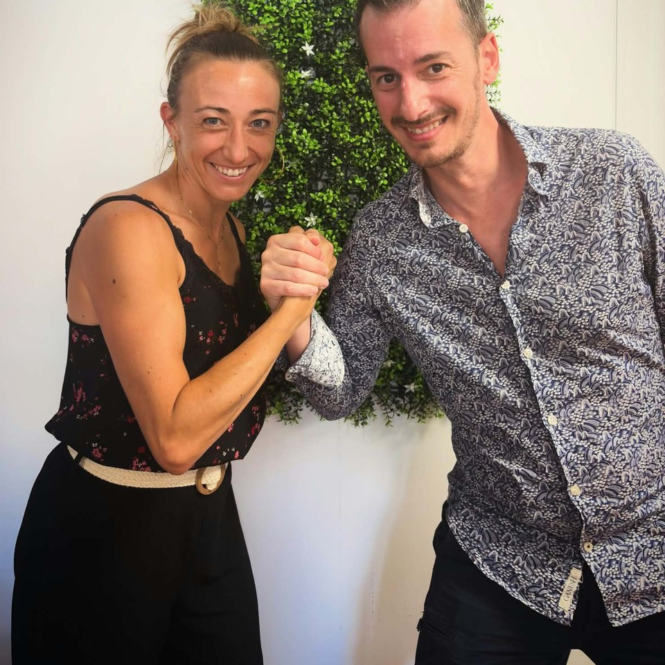

Les trois repas repères
Identifier trois repas appréciés, puis les ajuster progressivement.
L’APPROCHE DE CHRISTOPHE FONTANEL
Vous avez essayé de changer votre alimentation, de reprendre le sport ou de retrouver votre motivation. Mais entre les contraintes du quotidien, la fatigue et les habitudes bien installées, il n’est pas toujours simple de tenir dans la durée.
Killer des Kilos propose une autre approche : comprendre votre corps et vos comportements, identifier les leviers qui vous correspondent et construire progressivement des habitudes durables.
Une approche globale développée par Christophe Fontanel, à découvrir dans son livre ou avec un éducateur Sport-Santé formé à son approche.
Comprendre. Agir. Durer.

DÉCOUVRIR AUTREMENT
Découvrez les grandes idées de Killer des Kilos à travers une conversation audio inspirée du livre.
Podcast · 23 min
Synthèse audio générée à partir du manuscrit de Christophe Fontanel.
01 / CHANGER DE REGARD
Le chiffre sur la balance ne raconte pas toute votre histoire. Votre composition corporelle, vos capacités physiques, votre bien-être et votre autonomie sont autant de repères à prendre en compte.

Les régimes se succèdent, les bonnes résolutions aussi. Pourtant, les résultats ne sont pas toujours ceux espérés, et les habitudes peuvent être difficiles à maintenir.
Le poids ne dépend pas uniquement de ce que vous mangez ou de votre activité physique. Votre sommeil, vos émotions, votre environnement, votre santé et votre histoire personnelle jouent également un rôle.
Killer des Kilos est né de cette conviction : une transformation durable repose sur une meilleure compréhension de soi et des actions adaptées à sa propre réalité.
L’objectif est aussi de préserver vos muscles, d’améliorer vos capacités physiques, de retrouver de l’énergie et de construire un mode de vie compatible avec votre quotidien.
02 / L’APPROCHE
L’approche s’appuie sur une boussole pour identifier les domaines à explorer, un parcours en sept étapes pour transformer les intentions en actions et une boucle d’ajustement pour apprendre de ses progrès.
Mieux manger sans multiplier les interdits, selon vos besoins et vos préférences.
DES OUTILS À UTILISER DÈS AUJOURD'HUI
Identifier trois repas appréciés, puis les ajuster progressivement.
Prendre un instant avant de manger pour identifier faim, soif, fatigue, stress ou envie de réconfort.
Observer sommeil, fatigue, stress et courbatures pour adapter les activités.
03 / PROGRESSER À SON RYTHME
Vous grignotez souvent en rentrant du travail ? Observez les circonstances, choisissez une petite action, testez-la quelques jours, mesurez ce qu’elle change, puis ajustez-la. Une priorité à la fois, avec des actions réalisables.
Le parcours en sept étapes aide à identifier votre situation, choisir des priorités, expérimenter et ajuster vos actions. Il ne s’agit pas de tout changer du jour au lendemain.
04 / POUR QUI ?
Killer des Kilos s’adresse aux adultes qui souhaitent améliorer leur composition corporelle, retrouver de meilleures habitudes et prendre soin de leur santé sur le long terme.
Vous avez déjà essayé plusieurs régimes ou vous souhaitez sortir du cycle des restrictions.
Vous souhaitez vous remettre en mouvement ou vous cherchez une approche progressive.
Vous manquez de temps ou d’énergie ou vous voulez des actions réalistes.
Vous ne savez plus par où commencer ou vous avez besoin de repères clairs.
L’approche tient compte de votre histoire, de vos capacités et de vos contraintes. Certaines situations de santé nécessitent un avis médical ou un accompagnement spécialisé ; elle ne remplace pas les soins adaptés.06 / LE LIVRE
Christophe Fontanel vous invite à porter un nouveau regard sur votre poids, votre corps et vos habitudes. À travers des exercices guidés, des fiches pratiques et des outils d’auto-observation, le livre vous aide à passer progressivement de la compréhension à l’action.
Le livre donne des repères pour comprendre ce qui fonctionne pour vous, sans rechercher la perfection.
Acheter le livre ↗07 / L'HUMAIN AU CŒUR
Un livre peut donner des connaissances, des outils et une direction. Les transformer en habitudes durables peut parfois nécessiter un regard extérieur, des encouragements et un accompagnement adapté.
Un éducateur Sport-Santé formé à l’approche peut vous aider à identifier vos priorités, adapter votre activité physique, suivre votre progression et surmonter les obstacles rencontrés. Son rôle est de vous aider à devenir progressivement acteur de votre santé.
L’objectif est de développer votre autonomie.
LE RÉSEAU BY CORÉO
Pour celles et ceux qui souhaitent être guidés, un réseau d’éducateurs Sport-Santé formés à l’approche permet un accompagnement adapté aux besoins, capacités et objectifs. Les professionnels et structures du réseau peuvent également s’inscrire dans la démarche qualité By Coréo.
Découvrez les professionnels référencés et trouvez un éducateur formé à l’approche près de chez vous.


Le Référentiel Qualité Sport-Santé By Coréo définit des exigences pour les structures et les sites concernés : organisation, qualification, sécurité et qualité de l’accompagnement.
L’attribution du label privé « Centre Sport-Santé Qualité By Coréo® » exige la satisfaction de tous les critères critiques, un seuil global minimal et un audit documenté suivi d’une décision du comité qualité. Le référentiel pilote prévoit un renouvellement et des contrôles.
Ce label porte sur un site audité. L’appartenance au réseau, la formation à la méthode et la labellisation sont trois informations distinctes. Il ne constitue ni un agrément de l’État, ni une habilitation Maison Sport-Santé, ni une garantie de résultat individuel.
09 / À VOUS DE JOUER
Vous souhaitez mieux comprendre votre corps, retrouver de bonnes habitudes et avancer vers vos objectifs ? Choisissez la manière de commencer qui vous correspond.
Avancez à votre rythme : découvrez le livre et ses exercices.
↗02 / AVEC UN PROFESSIONNELTrouverFaites-vous accompagner : trouvez un éducateur formé à l’approche.
↗Killer des Kilos : Comprendre. Agir. Durer.